|
|
|
Copperband
butterflyfish
Chelmon rostratus
Family
Chaetodontidae
updated Sep 2020
if you
learn only 3 things about it ...
 Has a false eye to distract potential predators. Has a false eye to distract potential predators.
This fish forms monogamous pairs.
It
does poorly in a home aquarium, Don't collect them. |
|
Where
seen? This strikingly patterned fish is commonly seen on many
of our shores, among coral rubble and near reefs. It is said to be
more active during the day, but those seen at night can be quite frisky.
Elsewhere, they are found on rocky shores, coral reefs, estuaries
and silty inner reefs.
Features: To about 20cm, those
seen during low tide usually about 4-8cm. Body
flat, circular disk-shaped, snout is long and pointed. It is sometimes called the Beaked coralfish.
4 bands which are orange or yellow edged in black and white. White-ringed black eye spot on the dorsal fin, white-edged black bar at the base of the tail. The
pelvic fins are bright orange and yellow. Juveniles are solitary, more secretive and found in shallower water.
Adults have proportionally taller fins swimming in the open near the
sea bottom, forming pairs during breeding. |
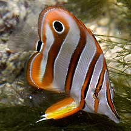
Sentosa, Oct 03 |
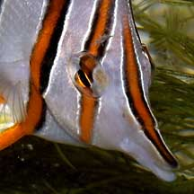
Pointed snout to nibble on small things. |
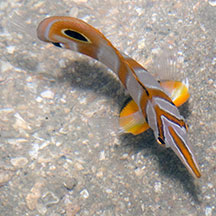
It almost disappears when seen
from above or head on.
Sentosa, Oct 03 |
What does it eat? It uses its
long snout to pick out bottom dwelling creatures from crevices. These
include worms and small crabs.
Human uses: Unfortunately these
beautiful fishes are popular in the live aquarium trade although they
are considered among the most difficult to keep and feed. According
to the IUCN Red List, "there is no data on how harvest for the
aquarium trade affects the population. There appear to be no other
major threats to this species." Fish traps
left on the intertidal often contain several of these beautiful
fishes. Sometimes, they are already dead as the trap is exposed
out of water. |
| Copperband
butterflyfishes on Singapore shores |
| Other sightings on Singapore shores |
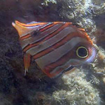
Punggol, Sep 18
Photo shared by Richard Kuah on facebook. |
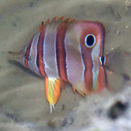
Changi-Loyang, Jul 20
Photo shared by Dayna Cheah on facebook. |
|
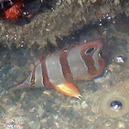
Pulau Ubin, Jul 24
Photo by Chay Hoon on facebook. |
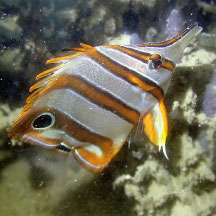
Beting Bronok, Jun 25
Photo by Jianlin Liu on facebook. |
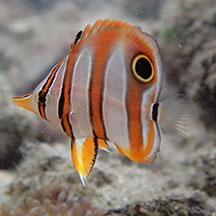
Pulau Sekudu, Jul 15
Photo by Jianlin Liu on facebook. |
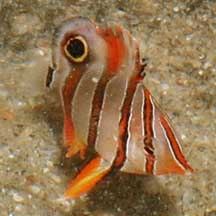
Tanah Merah, Jun 09
Photo shared by James Koh on his
flickr. |
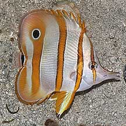
Tanah Merah, Nov 09
Photo shared by James Koh on his
blog. |
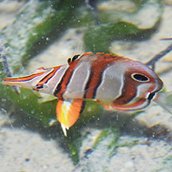
East Coast-Marina Bay, Nov 17
Photo shared by Loh Kok Sheng on facebook. |
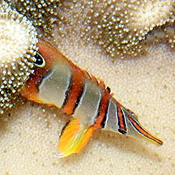
Sentosa Serapong, May 24
Photo shared by Loh Kok Sheng on facebook. |
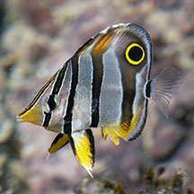
Labrador, Oct 25
Photo shared by Yan Le Su on facebook. |
|
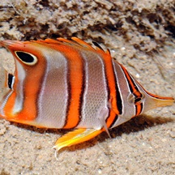
Seringat
Kias, Apr 12
Photo shared by Loh Kok Sheng on his
blog. |
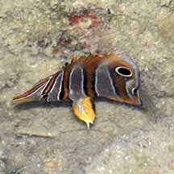
Kusu Island, May 16
Photo shared by Jonathan Tan on facebook. |
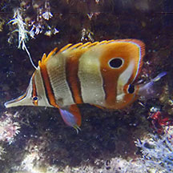
St John's Island, Aug 23
Photo shared by Richard Kuah on facebook. |
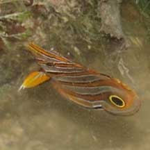
Sisters Island, Aug 09
Photo shared by Neo Mei Lin on her
blog. |
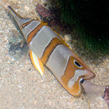
Small Sisters Island, Sep 10
Photo shared by Marcus Ng on flickr. |
|
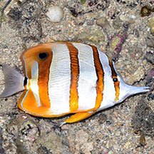
Cyrene, Jun 20
Photo shared by Loh Kok Sheng on facebook. |
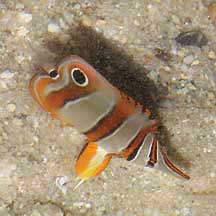
Pulau Tekukor, Jan 10
Photo shared by James Koh on his
flickr. |
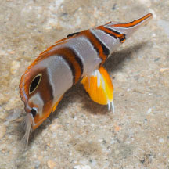
Pulau Jong, Aug 25
Photo shared by Marcus Ng on facebook. |
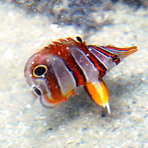
Pulau Hantu, May 19
Photo shared by Jianlin Liu on facebook. |
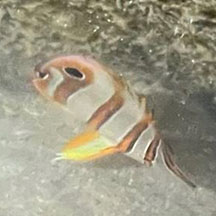
Pulau Hantu, Dec 25
Photo shared by Kelvin Yong on facebook. |
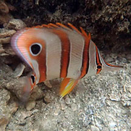
Terumbu Hantu, Jul 18
Photo shared by Dayna Cheah on facebook. |
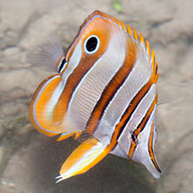
Pulau Semakau, Jul 15
Photo shared by Marcus Ng on flickr. |
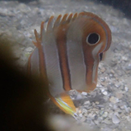
Terumbu Semakau, Jul 14
Photo shared by Jianlin Liu on facebook. |
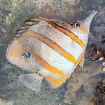
Terumbu Semakau, May 23
Photo shared by Kelvin Yong on facebook. |
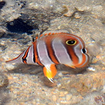
Terumbu Bemban, Jun 20
Photo shared by Loh Kok Sheng on facebook. |
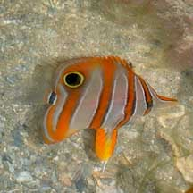
Beting Bemban Besar, Apr 10
Photo shared by Toh Chay Hoon on her
blog. |
|
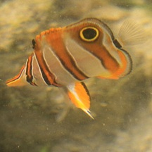
Terumbu Pempang Laut, Apr 11
Photo shared by Russel Low on facebook. |
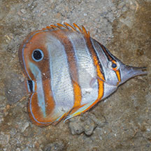
Terumbu Pempang
Laut, Jul 25
Photo shared by Marcus Ng on facebook. |
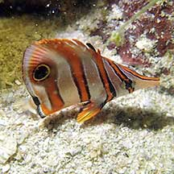
Pulau Salu, Apr 21
Photo shared by Jianlin Liu on facebook. |
Links
References
- Allen, Gerry,
2000. Marine
Fishes of South-East Asia: A Field Guide for Anglers and Divers.
Periplus Editions. 292 pp.
- Kuiter, Rudie
H. 2002. Guide
to Sea Fishes of Australia: A Comprehensive Reference for Divers
& Fishermen New Holland Publishers. 434pp.
- Lieske,
Ewald and Robert Myers. 2001. Coral
Reef Fishes of the World Periplus Editions. 400pp.
- Lim, S.,
P. Ng, L. Tan, & W. Y. Chin, 1994. Rhythm of the Sea: The Life
and Times of Labrador Beach. Division of Biology, School of
Science, Nanyang Technological University & Department of Zoology,
the National University of Singapore. 160 pp.
|
|
|